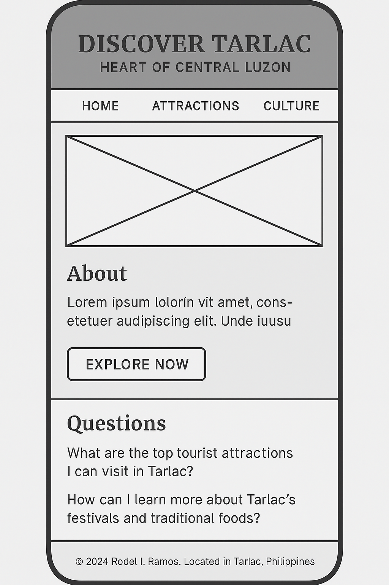

Website Plan: Discover Tarlac
Site Name
Name: Discover Tarlac: Heart of Central Luzon
This name reflects the geographical and cultural importance of Tarlac in the Philippines. It promotes awareness of the province’s unique offerings and invites exploration.
Optional Domain: discovertarlac.ph
Site Purpose
The website will serve as a digital guide for tourists and locals alike, providing valuable information on Tarlac’s tourist destinations, local culture, culinary experiences, and community pride. It aims to encourage tourism, preserve culture, and inform through interactive and engaging content.
Scenarios
- What are the top tourist attractions I can visit in Tarlac?
- How can I learn more about Tarlac's festivals and traditional foods?
Color Scheme
These colors reflect the earthy, natural, and cultural vibe of the province.
- Forest Green – used for headings and navigation (represents nature and culture)
- Golden Yellow – used for buttons, accents, and highlights (evokes warmth and hospitality)
Typography
- Merriweather – used for all major headings and titles (gives a formal and elegant feel)
- Roboto – used for body text and content (modern and easy to read)
Wireframe Layouts
Mobile View:

Desktop View:
Testing Checklist
- ✅ HTML and CSS validated using W3C validators
- ✅ Checked for accessibility (alt text, contrast, tab order)
- ✅ Responsive layout tested on different screen sizes
- ✅ Performance checked using Lighthouse (for lazy loading and JS features)
- ✅ SEO elements like meta tags, heading structure, and internal linking planned